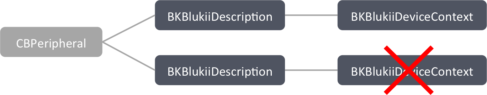

As mentioned before in the Introduction, blukiis are providing access to their sensors using the Generic Attribute Profile (GATT).
GATT uses a simple hierarchy to structure data.
Single values are represented by a Characteristic, which can be grouped by Services.
A blukii profile is just another term for such a service and a set of operations you can perform on its characteristics.
In this chapter you will learn how you can load such a profile and how you can manage them for one and for multiple blukii devices.
Loading Profiles
Using Core Bluetooth, you would need to discover a service and its characteristic to access them.
This task goes along with a lot of error management to avoid inconsistencies but at the same time you want your application to be still responsive and you want to load the profile efficiently.
Combining these goals is a really challenging task.
Therefore blukii Kit provides a generalized mechanism, which is highly optimized in terms of performance and safety.
There is a protocol called BKProfileLoader. This protocol is implemented by several concrete classes. One for each existing blukii profile.
Each of these profile loaders basically consists of two methods. The first one, evaluatePeripheral(_:), is a shortcut for the process seen in Identifiying blukii Devices and Instantiating blukii Descriptions.
It returns an optional BKBlukiiDescription, depending on whether the given peripheral is a blukii device or not.
The other method is loadProfileForBlukii(_:completeWith:), which will load the desired profile for the given connected blukii device.
Whenever you want to load a profile for a blukii device you can create an instance of the appropriate loader for the profile and let it do all the work for you, as shown in Listing 3.1.
Listing 2.3 Loading Battery Service profile
var peripheral: CBPeripheral
// [...]
if let blukii = BKBatteryServiceProfileLoader.evaluatePeripheral(peripheral) {
BKBatteryServiceProfileLoader().loadProfileForBlukii(blukii, completeWith: { (blukiiDeviceContext: BKBlukiiDeviceContext?, error: NSError?) -> () in
if error == nil {
// Profile loaded successfully
} else {
// Error while loading profile
}
})
}
If you need to load multiple profiles for a single blukii device please consider that it is not possible to load them parallel. This is because only one BKProfileLoader can become the delegate of the the associated peripheral. If you however try to load multiple profiles parallel only the first call will be executed and the other will be ignored. Use the completeWith closure to load all needed profiles sequentially.
Handling Multiple blukii Devices
As you can see from Listing 3.1 the loadProfileForBlukii(_:completeWith:) method will pass a tuple of (BKBlukiiDeviceContext?, NSError?) into the completion closure you provided.
While the NSError is only passed in as an indicator for you, whether loading the profile succeeded or not, the BKBlukiiDeviceContext will become the most important object for your application.
Profile Handlers
One important protocol we did not talk about yet is BKProfileHandler.
It is the counterpart to the BKProfileLoader protocol. For each blukii profile there is a concrete class implementing it.
These classes provide methods for you to access a profile in very efficient way.
They will be covered more detailed in Interacting with Profiles.
Understanding Device Contexts
The BKBlukiiDeviceContext class represents the current context of one blukii device.
Whenever a BKProfileLoader succeeds to load a certain profile for a given BKBlukiiDescription it will determine whether the given BKBlukiiDescription already belongs to a BKBlukiiDeviceContext instance.
If so the BKProfileLoader will add the resulting BKProfileHandler for the loaded profile to that existing context.
Otherwise it will create a new BKBlukiiDeviceContext and add the BKProfileHandler to it.
The basic function of a BKBlukiiDeviceContext is pretty simple.
It maintains a set of BKProfileHandler objects, which result from loading a profile.
After a BKProfleLoader succeeded loading a profile, it will set the delegate of the underlying CBPeripheral of the BKBlukiiDescription to the associated BKBlukiiDeviceContext.
The BKBlukiiDeviceContext will now distribute the peripheral callbacks to the appropriate BKProfileHandler.
Maintaining blukii Device Contexts
If there is a CBPeripheral, which belongs to more than one BKBlukiiDescription and one of these BKBlukiiDescriptions already belongs to a BKBlukiiDeviceContext you must not load a profile for one of the other BKBlukiiDescriptions.
Elsewise the concrete BKProfileLoader will not find a BKBlukiiDeviceContext associated with the BKBlukiiDescription and create a new context.
This will lead to multiple BKBlukiiDeviceContexts for one peripheral.
In such a situation peripheral callbacks may not be assigned unambiguously to one BKBlukiiDeviceContext.
To ensure your application will never run into such a situation the BKBlukiiDeviceContext class will send a notification to all existing instances in its initializer.
This notification contains the underlying CBPeripheral object of the BKBlukiiDescription that a BKBlukiiDeviceContext instance should be created for.
The receiving BKBlukiiDeviceContext instances will check if the underlying CBPeripheral object of their associated BKBlukiiDescription instances is equal to the one included in the notification.
If there is a match in one instance it will raise a BKMultipleDeviceContextsForPeripheralException.
Figure 3.1 shows a situation that will lead to the raise of an BKMultipleDeviceContextsForPeripheralException.
Figure 3.1 Invalid map between multiple blukii descriptions and device contexts
